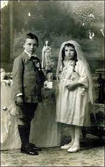

Esto era una niña que le gustaban mucho las muñecas. Para su comunión, su padre le compró una preciosa muñeca de comunión, era toda ella de porcelana, pero no se podía romper.
Cuando se la vendieron a su padre, el hombre de la tienda le dijo que bajo ningún concepto se le podían cortar las uñas a la muñeca. La niña cuando ya había pasado algún tiempo le cortó las uñas a la muñeca porque no podía jugar con ella.
Esa misma noche comenzaron a ocurrir cosas muy extrañas en la mansión donde vivía la niña con toda su familia: abuelos, tíos, primos, padres... Por la noche ella sintió un ruido extraño y le pareció como si alguien abriese la puerta de su habitación. A la mañana siguiente su madre le dijo que había muerto su abuelo. Pasaron los días y la nina cortaba de poco en poco las uñas a su muñeca, iban desapareciendo perros y gatos en el vecindario. Después de verano las uñas le habían crecido mucho a la muñeca y la niña se las cortó de golpe.
Al día siguiente murieron sus tíos y primos. Los padres, asustados, preguntaron a la niña que si le había cortado las uñas a la muñeca, ella les dijo que no, pero el padre vio que la muñeca las tenía cortadas y regañó a la niña. Esa misma noche cuando la niña estaba durmiendo vio cómo la muñeca se movía, se levantó y fue hacia ella, comenzó a golpearla fuertemente contra el suelo, la muñeca giró la cabeza hacia la niña y le dijo: - La siguiente vas a ser tú